25.3. 科学可视化技术#
高级可视化，是指利用某一个领域较多的专业知识来去生成符合先验知识的可视化呈现效果的技术。我们分别以体渲染和流场可视化为例介绍高级可视化算法的分析流程。
25.3.1. 体渲染#
体渲染(Volume Rendering)是标量数据可视化中的一类经典技术。 体渲染是指通过半透明的着色将三维标量场整体投射到二维屏幕的技术。与等值面提取特定层面不同,体绘制强调全局的整体感知。体绘制的关键是设计合理的”传输函数”,将标量值映射到颜色和不透明度,模拟光线在介质中的吸收、发射和折射。代表性方法有光线投射、正交切片等。在传递函数设计中,常根据数据的梯度、曲率等属性导出界面,并用层次树等结构组织,以应对可视化参数调节之繁复。
体渲染的主体是三维的数据，一种经典的数据类型是体素（voxels）。如图 25.13 所示。
{kind=link}
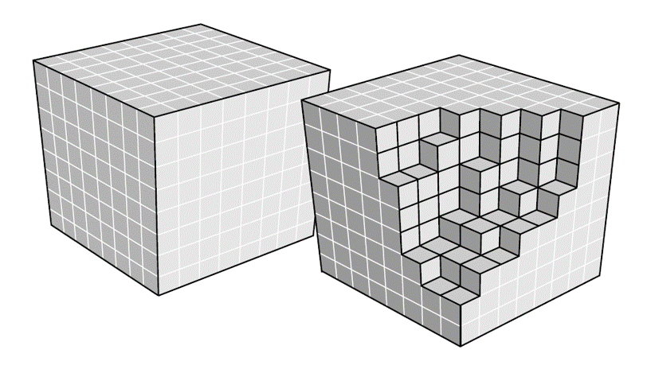
图 25.13 三维数据体素#
体渲染（Volume Rendering）最初用于在计算机图形中生成非刚性物体的可视化效果，如云、烟、果冻等。这些物体通常不具有明确的表面边界，并且其物质的密度相对较低。体渲染技术的关键在于处理这些物体的半透明和不规则特性，使其在视觉上更为真实。
体渲染通过将气体或其他非刚性物质抽象为粒子群来实现这一目的。在这种表示中，物体被视为由大量小粒子组成的集合体，而非一个具有固定形状和边界的实体。这种方法允许光线以更自然的方式穿过物体，更好地模拟光子与粒子间的相互作用。当光线穿过这些由粒子群构成的物体时，它们不断与粒子发生相互作用，例如散射和吸收。这种相互作用导致光线路径的改变，从而产生了体渲染中独特的视觉效果。此外，体渲染技术也被应用于固体物体的渲染，如 Neural Radiance Fields（NeRF）通过学习物体或场景的三维密度和颜色分布，能够生成高质量的三维场景和物体渲染效果，包括那些具有复杂光照和细节的场景。我们首先对比以下体渲染和之前提到的表面渲染，然后就体渲染的物理公式进行一定推演，最后用光线投影算法作为一个体渲染的实现算法。
体渲染和表面渲染的对比
特性 |
表面渲染 (Surface Rendering) |
体渲染 (Volume Rendering) |
|---|---|---|
数据转换 |
数据被转换为表面基元（如三角形），然后进行绘制。 |
不需要提取表面基元，数据由一个或多个（假定连续的）3D 场构成。 |
可视化表示 |
所有可见内容都是嵌入在 3D 空间中的 2D 表面。 |
直接渲染整个体积，类似于一团彩色的果冻。 |
数据隐藏风险 |
转换为几何基元可能会丢失或隐藏某些数据。 |
数据较少可能被隐藏，提供更全面的视觉信息。 |
适用场景 |
适用于不透明物体。 |
适用于需要详细展示内部结构的应用场景。 |
表面渲染和体渲染的对比如图 25.14 所示，可见体渲染可以在给出相应的形状的前提下并对于内部给出一些信息。
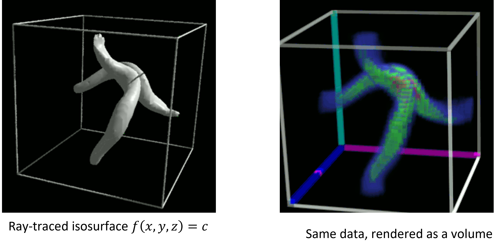
图 25.14 表面渲染和体渲染的对比图#
体渲染的原理
体渲染把光子与粒子发生作用的过程，进一步细化为三种类型：
吸收 (absorption)：光子被粒子吸收，会导致入射光的辐射强度减弱。
放射 (emission)：粒子本身可能发光，这会进一步增大辐射强度。
散射 (scattering)：光子和其他粒子相碰撞后，导致方向发生偏移，如果偏移朝向光束方向则会增加光路上的辐射强度，反之则会减弱入射光强度。
我们通过图 25.15 来说明这些系数导致的光学方程。
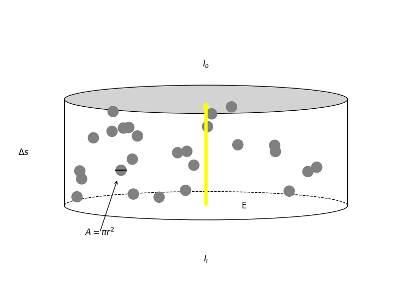
图 25.15 体渲染的光与介质作用的示意图#
这有一个介质，光线从介质的一个面到另一个面。其中假设介质的厚度为 \(\Delta s\)，介质中的杂质粒子的横截面积为 \(A=\pi r^2\)，这个介质的横截面积为 \(E\)，粒子密度为 \(\rho\)，则在这个空间内的粒子数目为 \(\rho E \Delta s\)，总的遮挡的面积为 \(\rho E \Delta s A\)。则遮挡的比率为 \(\rho E \Delta s A / E = \rho A \Delta s\)，于是可以有以下的式子：
为了普遍性，假设 \(\rho(s)\) 和光强 \(I(s)\) 都是沿着光路的函数。换句话说，如果我们在圆柱体的一端发射无数光线（假设都朝相同的方向），在另一端接收，会发现有些光线安然通过，有些则被粒子遮挡（吸收）。但可以确定的是，这些接受到的光线总强度，相比入射光线总强度而言，会有一定比例的衰减，即出射光的强度均值是入射光的多少倍。具体可以由积分得到，数学上可以表示为：
其中 \(\tau_a = \rho A\) 是吸收系数。对于其他的放射和散射项，也可以定义类似的系数，有放射系数 \(\tau_e = \tau_a\)，但是取决于发出的光的光强 \(I_e\)。散射系数 \(\tau_s\)，包括外散射（弹射光子偏移光路）系数和内散射（弹射光子偏向光路）系数。于是有：
其中 \(I_s\) 为内散射的光强。对该方程进行积分求解便可以得到光强，然后通过光强和颜色的对应关系，可以得到某视角观测得到的颜色。一些体渲染得到的结果图如下。
光线投影
下面我们将介绍体渲染的一种经典实现算法，光线投影（Ray Casting）。光线投影是体渲染的一种技术实现。它通过追踪从视点出发穿过体数据的虚拟光线来生成图像。每条光线与数据体内的元素相交，并计算这些相交点的颜色和强度，最终生成图像。
光线投影的步骤可以总结如下：
发射光线：从观察点（通常是相机或者用户的视点）发射光线。在基本的光线投影中，每个光线对应屏幕上的一个像素。
找交点：计算每个光线与场景中对象的交点，可能会涉及到固定网格上的插值。这个步骤是最计算密集的部分，因为它需要检查光线与场景中每个物体的交集。
法线计算：渲染算法通常需要知道在每个采样点的表面法线方向。由于体积数据通常不包含法线信息，因此需要通过梯度估计来计算。
分类：按照当前位置的物体的属性去查找该数据的颜色-亮度关系。
着色：按照光照模型的计算，比如 Phong 光照模型，来确定物体在当前位置和历史光照条件下的外颜色。
合成：沿着光线路径采样的多个数据值结合起来，以生成最终的像素值。 上述步骤的操作如图 25.16 所示。
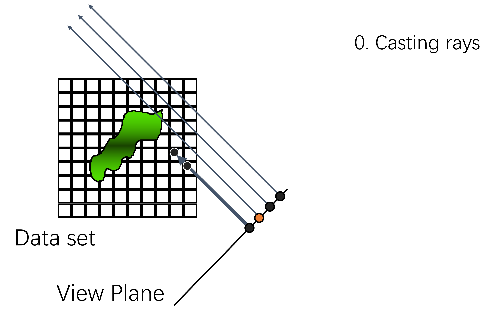
步骤1：发射光线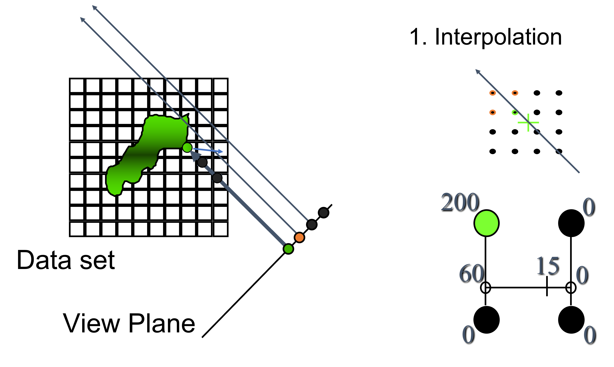
步骤2：找交点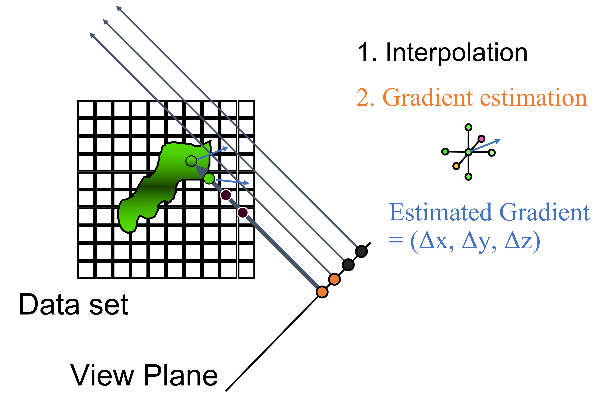
步骤3：法线计算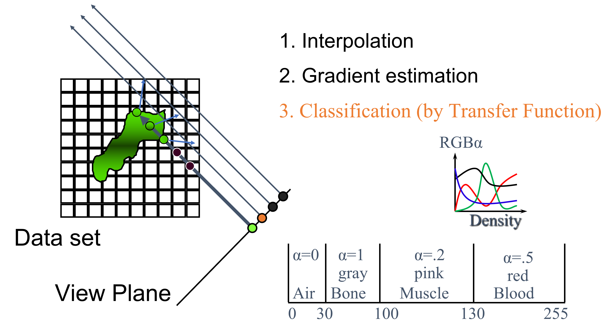
步骤4：分类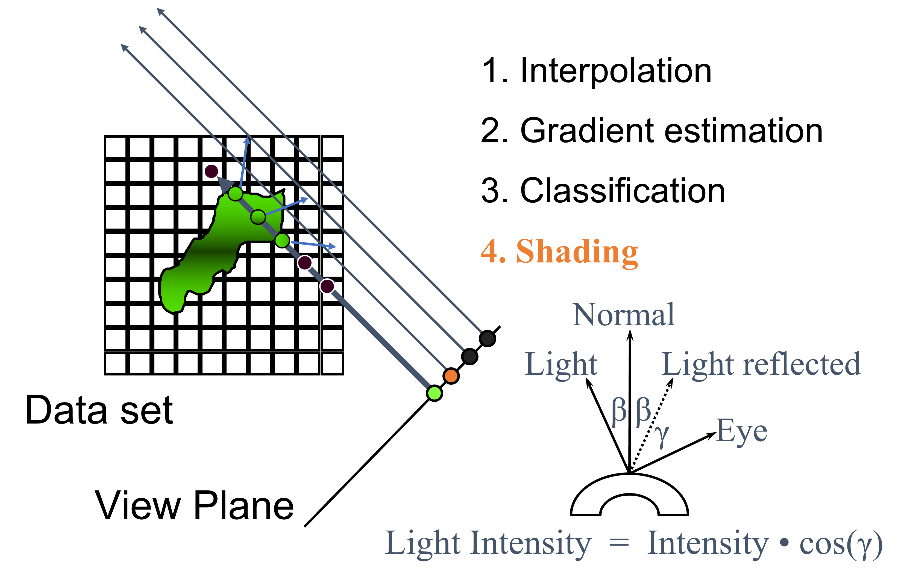
步骤5：着色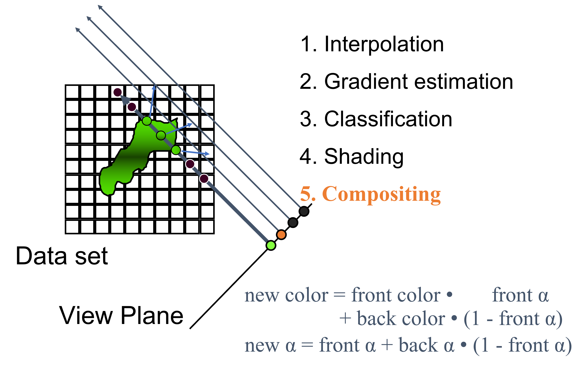
步骤6：合成图 25.16 光线投影示意图#
除了光线投影之外，其他的体渲染方法还有纹理映射体积渲染，它利用 GPU 加速将体积数据分解为一系列二维纹理，以及光线行进（Ray Marching），这是一种以固定步长沿光线路径进行采样的简化版光线投影。另一种方法是剖面法（Splatting），它将体积数据表示为一系列具有位置、颜色和不透明度的点，然后在视平面上进行重构和混合。为了加速体积渲染，常用的技术包括多级渐进纹理（MIP Mapping），它根据视图距离选择不同分辨率的纹理来优化渲染；使用空间数据结构（如八叉树或 K-D 树）组织数据，快速剔除不可见区域；以及预积分技术，预计算光线穿过体积元素时的颜色和不透明度积分。这些方法和技术在提高渲染速度和处理大型体积数据集方面会有显著效果。
25.3.2. 流场可视化#
流场可视化用于研究和理解复杂的三维涡流动和湍流的物理过程。这些流动模式可以以多种方式显示，它们可以是染料或烟雾注入流场后拍摄的照片。流动可能是稳定的或非稳定的。它们可以是使用一些条件平均技术（如热线或数字粒子图像测速法）测量的矢量场。无论使用何种技术生成流动模式，最终都会得到流动模式的单张或多张图像，通过解释这些图像，可以理解流场的物理特性。对于非稳定流动会引入一系列的辅助线形来展示，如路径线、流线和线迹，来明确描述流场。
流场可视化中显示流场常用以下三种辅助线形：
流线 (streamlines) 表示在特定时刻流体中每个点的速度方向。流线不交叉，因为在任何给定点流体不能同时向两个方向流动。流线用于展示流体流动的模式，但不能显示流体随时间的变化。但是在稳定的流场内，流线恒定。
路径线 (pathlines) 是单个流体粒子随时间的运动轨迹。它显示了一个特定流体粒子从开始点到结束点的实际路径。轨迹线用于理解流体粒子随时间的运动，特别是在非稳态流动中。
条纹线 (streaklines) 是通过流场中某一固定点的流体粒子在注入时候连线形成的轨迹。它表示所有经过该固定点的流体粒子在任何时刻的位置。条纹线在实验流体动力学中常用，比如通过注入染料或烟雾来观察流动。
总结来说，流线是关于速度的，路径线是关于粒子路径的，而条纹线是关于特定点随时间流过的粒子。这三者的关系可以参考课件中的动图，其中红色的是由原点释放的粒子进行轨迹跟踪得到的路径线。蓝色的是通过不断释放粒子得到的痕迹线。而随着时间不断改变整个场的流场速度线则由灰色的流线显示。
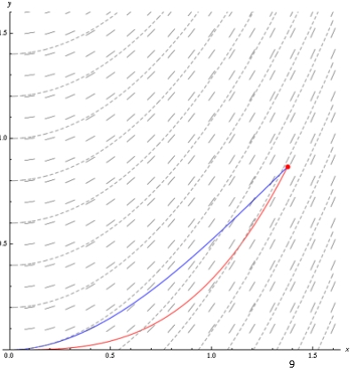
图 25.17 流场可视化中的三种线形，动图请参考流场可视化课件。#
下面我们分别介绍三种线形。
流线
流线表示在特定时刻流体中每个点的速度方向。由以下公式定义：
流线也便是对于某一时刻的速度的积分：
因为流线只有在很短的时间内才可以认为是恒定的，于是实验上观测流线的方法是，观察摄入染料的短时间内（曝光时间量级）线形。一些流线展示的实验结果如下图。
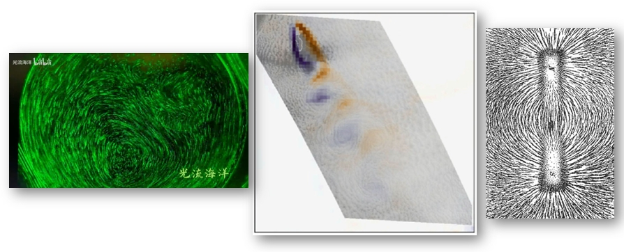
图 25.18 一些流线实验例子。#
路径线
路径线是单个流体粒子随时间的运动轨迹。公式化则为随着时间变化的粒子速度：

图 25.19 一些路径线实验例子。#
条纹线
条纹线是通过流场中某一固定点的流体粒子在注入时候连线形成的轨迹，公式化为：
实验效果请参考流场可视化课件中的动图。
25.3.3. 流场可视化经典算法#
下面我们回归可视化内容，存在许多不同的流场可视化技术，它们可以根据在若干方面的特性来进行区分。
基于点的直接可视化方法考虑了某一点上的矢量场，可能还包括其邻域，以获得视觉表示。矢量场直接映射到图形基元，意味着不需要进行复杂的中间数据处理。另一类基于粒子追踪获得的特征曲线。第三类对数据进行深度预处理以识别重要特征，然后将其作为实际可视化的基础。
另一种特性是表示的密度：领域可以由可视化对象稀疏或稠密地覆盖。密度对于将粒子追踪方法进行子类化特别有用。与密度相关的是本地和全局方法的区别。全局技术基本上显示完整的流动，而本地技术可能会错过流动的重要特征。
可视化方法的选择也受数据结构的影响。定义矢量场的流形的维度起着重要作用。例如，在2D中表现良好的策略在3D中可能由于感知问题而不太实用。
此外，还必须区分时间相关和时间无关的数据。稳定流动通常要求较少，因为很容易实现帧与帧之间的一致性，而流线、条纹迹和路径线是相同的。
最后，必须考虑网格的类型。数据可以以均匀、矩形、曲线或非结构化网格的形式提供。网格类型会影响可视化算法，主要涉及数据存储和访问机制或插值方案。一些经典的可视化算法如下图所示，我们将按分类分别介绍相关算法。我们会先介绍稀疏结构的可视化，再介绍稠密结构的可视化。
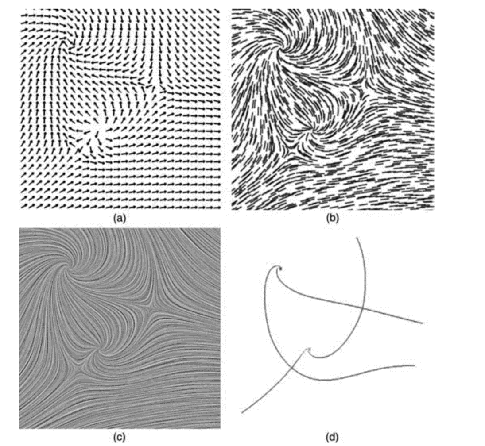
图 25.20 不同可视化技术在相同2D流场中的比较: (a) 箭头图, (b) 流线段, (c) 线积分卷积 (LIC), (d) 基于拓扑的方法。#
基于点的可视化
使用箭头图来绘制流线是基于图形的直接流动可视化的经典的例子。小箭头被绘制在离散的网格点上，显示了流动的方向。流动也可以通过有向线段来可视化，其长度代表速度的大小。制作一个这样的可视化的流程如下：
将矢量场投影到图像平面
定义网格
显示流动的表示
解决几何不连续性
重建每个箭头表示
其他的增强功能
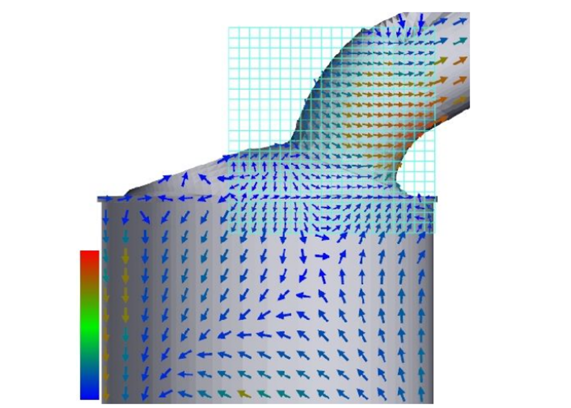
图 25.21 基于点的可视化，源自From Vector Glyphs for Surfaces: A Fast and Simple Glyph Placement Algorithm for Adaptive Resolution Meshes。#
粒子追踪
粒子追踪是在流场域的指定位置释放一定数量的无质量粒子，然后跟踪这些粒子在域内的轨迹。在稳定和时变的流场中，生成的轨迹分别被称为流线和路径线。这些轨迹在视觉上反映了流场的局部或全局变化，并帮助用户提取流场中固有隐藏的重要特征。
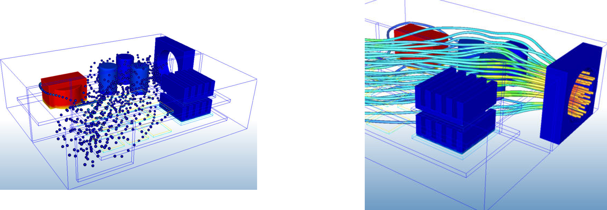
图 25.22 基于粒子追踪的可视化。#
点噪声法
接下来我们介绍稠密模式的可视化。稠密是指连续的，建立在基于纹理的技术之上的可视化技术。根据矢量场的局部特性进行连续化的扩展，然后渲染。适合2D和3D的物体表面，但不适合体渲染。具体算法有点噪声（Spot noise），用于矢量场可视化通过在场中的随机位置插入带有随机强度的扭曲点来生成，以及线性积分卷积算法LIC（Line Integral Convolution）以矢量场和白噪声纹理作为输入来进行绘制。
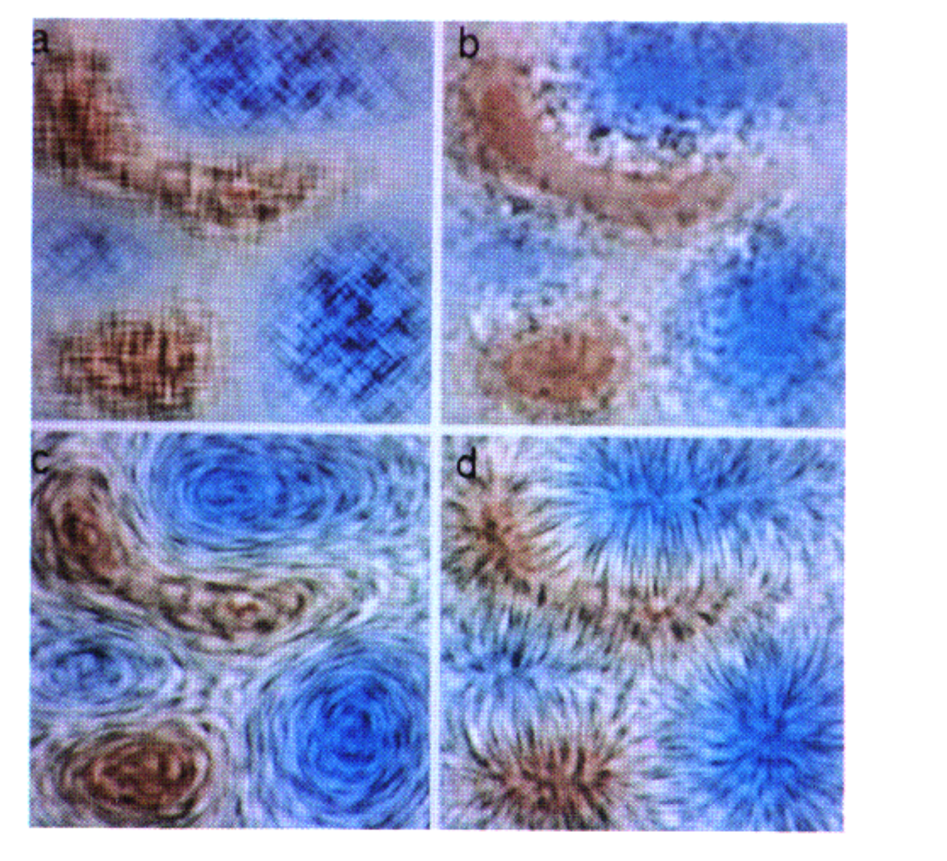
图 25.23 基于点噪声法可视化标量场，（a）值，（b）梯度，（c）流，（d）速度势。#
点噪声法使用随机分布的点（即”斑点”）来可视化向量场，尤其是流体流动。其核心思想是通过噪声模式来展示流场的特性，使观察者能够直观地理解流动的方向和强度。斑点是随机分布在整个流场中的小点。它们可以被表示为噪声函数 \(N(x, y)\)，其中 \(x, y\) 是流场中的位置坐标。斑点的密度和分布通常与流场的速度或其他物理量相关。例如，可以使用速度向量场 \(\mathbf{V}(x, y)\) 来调整斑点密度，使得流速大的区域斑点更密集。
可以使用一个简单的线性组合来生成最终的可视化图像，例如：
其中，\(I(x, y)\) 是最终图像的强度，\(I_0\) 是背景强度，\(\alpha\) 是一个调节因子，用来控制噪声对最终图像的影响程度。
点噪声法算法的优点在于它能生成直观流场可视化图像，适合展示复杂的流体动力学特性。缺点是在处理非常高速或高度湍流的流场时，可能无法清晰展示所有细节。
线性积分卷积
点噪声方法的可视化效果在很大程度上取决于纹理的形式，而稀疏可视化的图标法需要用较大的图片，画出箭头，占用相当多的空间分辨率表示较为稀疏的信息。线性积分卷积（Line Integral Convolution，LIC）是一种具有2D或3D矢量场通用性的新技术，将两者进行结合。其能够成像密集矢量场、独立于预定义的纹理生成稠密可视化效果，并且可以应用于二维和三维数据中。
在引入LIC之前，我们先介绍图线和纹理之间的卷积融合。数字微分法（Digital Differential Analyzer, DDA）是一种用于栅格化直线段的技术，即将数学上的连续直线转换为像素网格上的近似表示。通过将曲线进行栅格化，然后和背景纹理进行求卷积，可以得到包含两者信息的融合。DDA-Concolution算法的流程如下图所示：
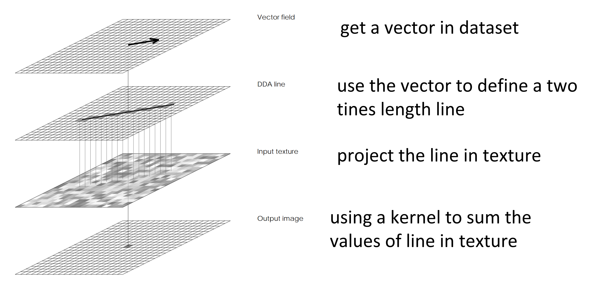
图 25.24 数字微分卷积法的操作流程。#
对于DDAC算法，假设速度场近似成直线效果还好，但是对于曲率半径很小的点不准确。而且本身简单地应用卷积，自带一个去噪平均化效果，高频的会看不出，造成信息频率缺失不平衡。还有aliasing的问题，受制于分辨率限制，导致可能会有不对称的结果。因此后续会提出LIC算法来修缮上述问题。
LIC算法简单来讲就是加上了两个限制，沿流线进行卷积就可以解决曲率精度不够的问题，同时通过内禀保证对称性来解决离散化时候的aliasing问题。
其中 \(P\) 表示图像（纹理图像）中的像素位置。\(V(\lfloor P \rfloor)\) 表示在格点 \(P_x, P_y）\)上输入矢量场的矢量。 \(\Delta s_i\) 和 \(\Delta s_i'\) 是沿着平行于矢量场的线从 \(P_i\) 到最近单元格边缘的正负参数距离。其中 \(\Delta s_i = \min(s_{top}, s_{bottom}, s_{left}, s_{right})\)，\(\Delta s_i'\) 类似。\(h_i\) 表示流场的卷积结果。最终图像上应该呈现的结果由 \(F'(x, y)\) 给出。
我们引用此网站的LIC的分析来总结算法。此博客同时给出了其他经典的流场可视化实现例子，感兴趣的同学请自行阅读。
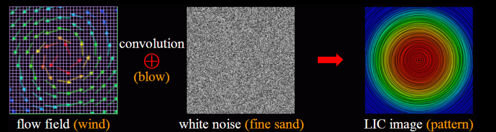
图 25.25 LIC算法效果类似于一堆细沙被强风吹散。#
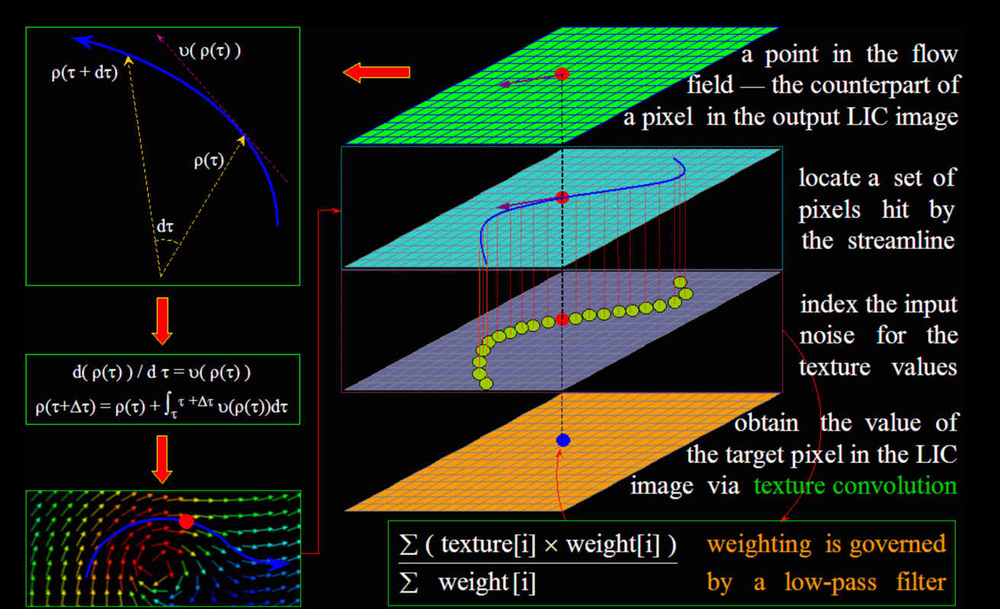
图 25.26 LIC算法流程。#
在传统的 LIC 方法中，每个像素点的计算都是独立的，而 TexMap LIC 则通过将 LIC 运算映射到纹理空间中来优化这一过程。这种方法使得 LIC 能够更好地利用现代图形硬件的能力，尤其是在处理大规模或复杂的矢量场数据时，能够显著提高渲染速度和图像质量。Volume LIC 是将 LIC 方法扩展到三维空间的一种技术，用于三维矢量场的可视化。它通过在体积数据中沿着矢量流线进行积分卷积，生成能够表现三维流动特性的图像。
25.3.4. 流场可视化前沿#
可视化的前沿领域集中于对于以下问题的探索，如不稳定流的可视化、可视化算法的加速、结合网络的可视化。我们在此只是简单介绍，感兴趣的同学可以根据课件翻阅对应的论文。不稳定流（Unsteady Flow）可视化专注于展示随时间变化的流体动力学特性，VAUFLIC (Vector-Advection Upstream Line Integral Convolution)对传统 LIC 的一种改进，专门用于可视化非稳定流。该方法通过考虑矢量场中的流动方向和速度，增强了图像的细节和流线的连续性，特别适合于描绘复杂的流动模式，如涡旋、湍流等。
可视化的一个经典难题是对于较大的流场需要很大的时间开销，类似于光线追踪问题中的路径追踪求解方案，并行处理是一个经典的对策。通过数据并行（每个线程处理部分数据）和任务并行（每个线程解决部分算法流程）处理，可以显著提高大规模流场数据集的处理速度和效率。并行解决在处理复杂和大数据流场时尤为重要，如气候模拟和高分辨率流体动力学模拟。
随着深度学习在各个领域迅速结合传统工作，长短时记忆网络（LSTM）在流场可视化中的应用也逐步出现，涉及到使用深度学习技术来分析和预测流体动力学行为。LSTM 可以帮助识别流场中的复杂模式，如周期性涡旋，以及长期依赖关系。这种方法在预测未来的流体行为以及分析非稳定流动中表现出了巨大的潜力。Flow Net从流场数据集生成的一组流线或流面，然后使用自编码器来学习它们各自的潜在特征描述符。然后利用潜在空间中的隐变量去生成符合输入表征的流线或流面，来得到一个合理的混合预定义模式的结果。